Oberflächen¶
Galerie der wichtigsten Screens des Marketplace Portals — Klick auf ein Bild öffnet die Lightbox-Ansicht (Zoom, Vor/Zurück-Navigation, ESC zum Schließen).
Die Oberfläche ist rollenbasiert: Requester bestellen Services, Approver genehmigen, Admin/Superadmin verwalten Katalog, Regeln und Audit. Die linke Navigation und die sichtbaren Bereiche richten sich nach der Rolle des angemeldeten Benutzers.
Anmeldung¶
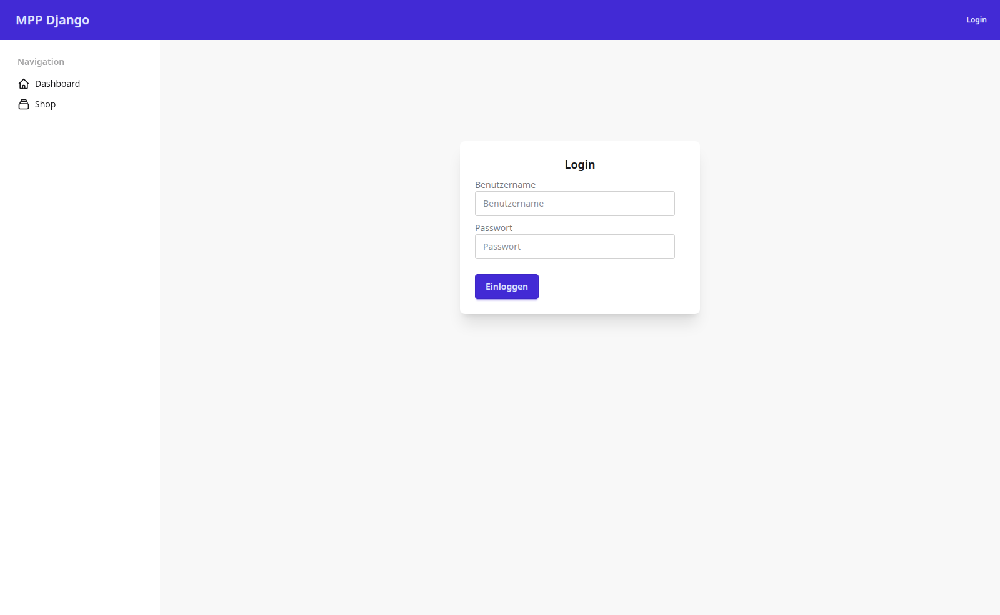
Session-basierte Anmeldung über django-allauth. Self-Service-Registrierung ist
deaktiviert (ACCOUNT_SIGNUP_ENABLED=False) — alle Benutzer werden vom Admin
angelegt. Die Anmeldung erfolgt über Benutzername und Passwort.
Dashboard¶
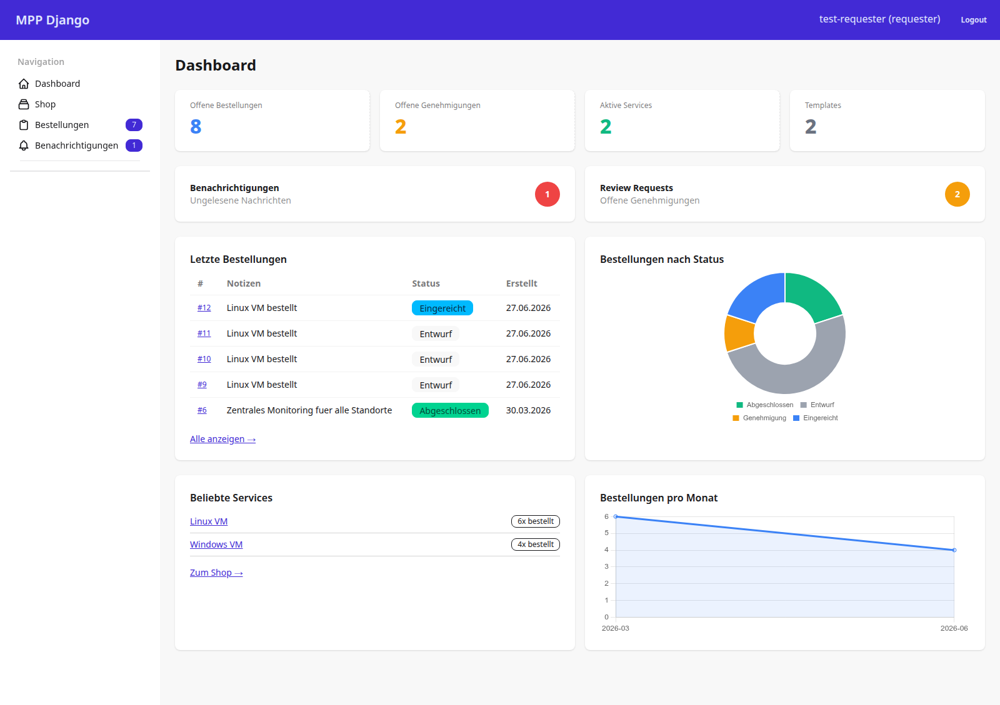
Die Startseite nach dem Login. Oben vier KPI-Kacheln (Offene Bestellungen, Offene Genehmigungen, Aktive Services, Templates), darunter die letzten Bestellungen mit Status-Badges, ein Donut-Diagramm „Bestellungen nach Status", die beliebtesten Services und der Bestell-Verlauf pro Monat. Die Diagramme nutzen lokal gebundeltes Chart.js (keine CDN-Abhängigkeit).
Service-Katalog (Shop)¶
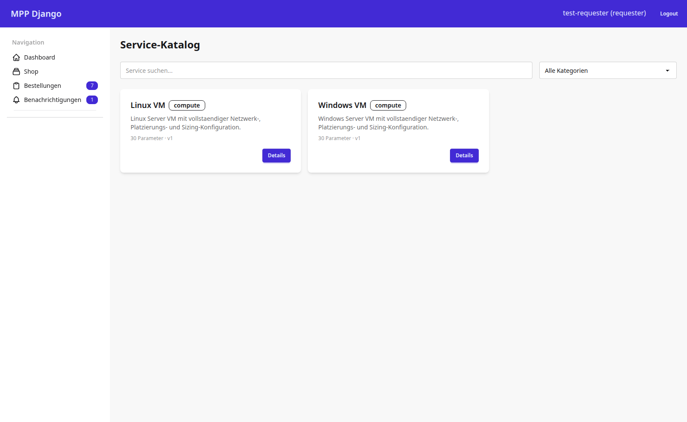
Der Katalog listet alle bestellbaren Services als Karten. Ein Suchfeld und ein Kategorie-Filter grenzen die Auswahl live ein. Jede Karte zeigt Kategorie, Kurzbeschreibung, Parameter-Anzahl und Version. Der Details-Button führt zur Service-Detailseite.
Katalog-Detail — Parameter-Übersicht¶
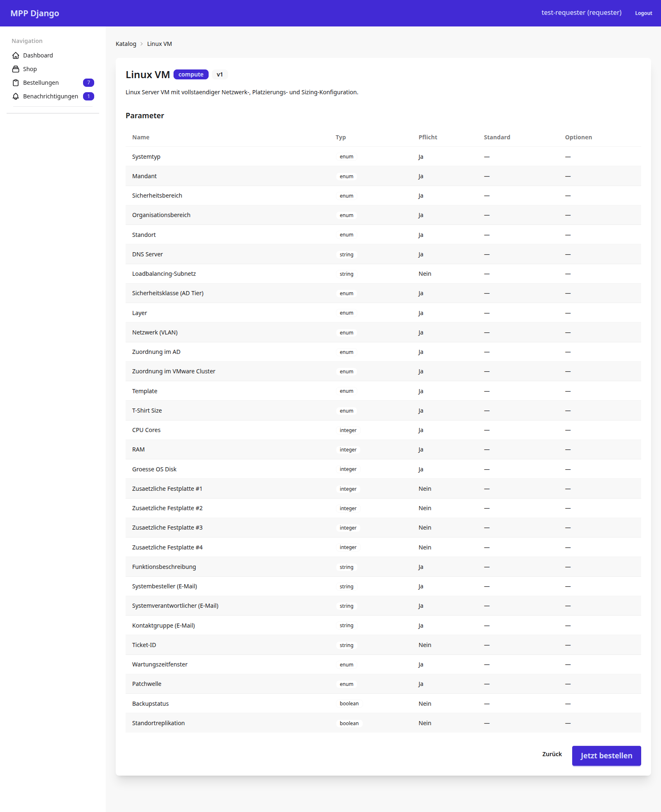
Die Detailseite eines Templates zeigt die vollständige Parameter-Spezifikation:
Name, Typ (enum, string, integer, boolean), Pflichtangabe, Default und
Optionen. Beim Linux VM sind das 30 Parameter über Kontext, Netzwerk, Sizing
und Betrieb. „Jetzt bestellen" öffnet das Bestellformular.
Bestellformular — Linux VM bestellen¶
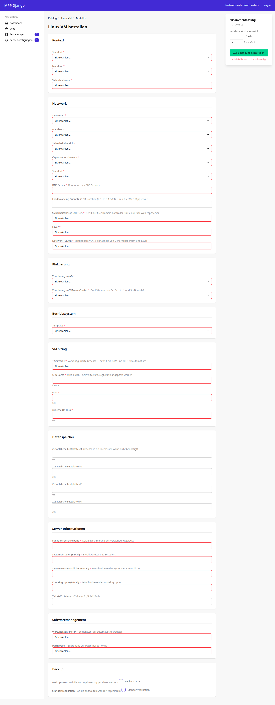
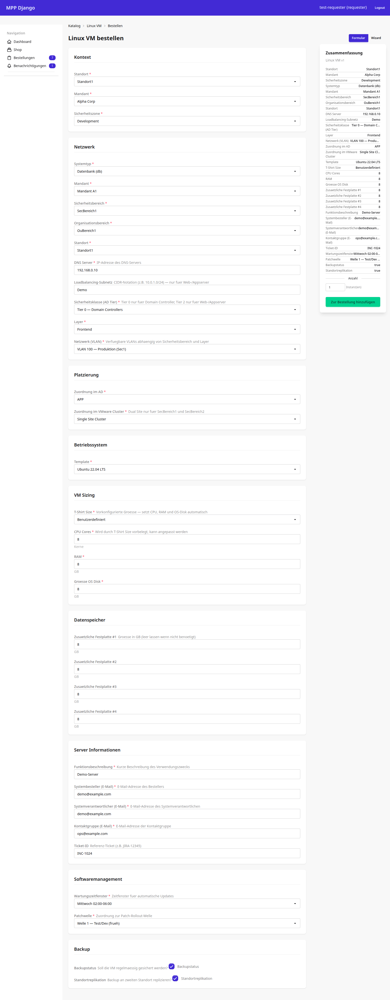
Das All-in-One-Formular fasst Kontext, alle Template-Parameter und die Menge auf
einer Seite zusammen, gruppiert nach Abschnitten (Kontext, Netzwerk, Platzierung,
Betriebssystem, VM Sizing, Server-Informationen, Software-Management, Backup).
Rechts läuft eine Live-Zusammenfassung der gewählten Werte mit, die sich mit
jeder Eingabe aktualisiert — der Vergleich oben zeigt den Bereich, der sich füllt:
links leer, rechts vollständig. Validierung erfolgt zweistufig: Django-Form
(Feldtypen) und Service-Layer (TemplateValidator gegen das Template-Schema).
Bestellungen — Übersicht¶
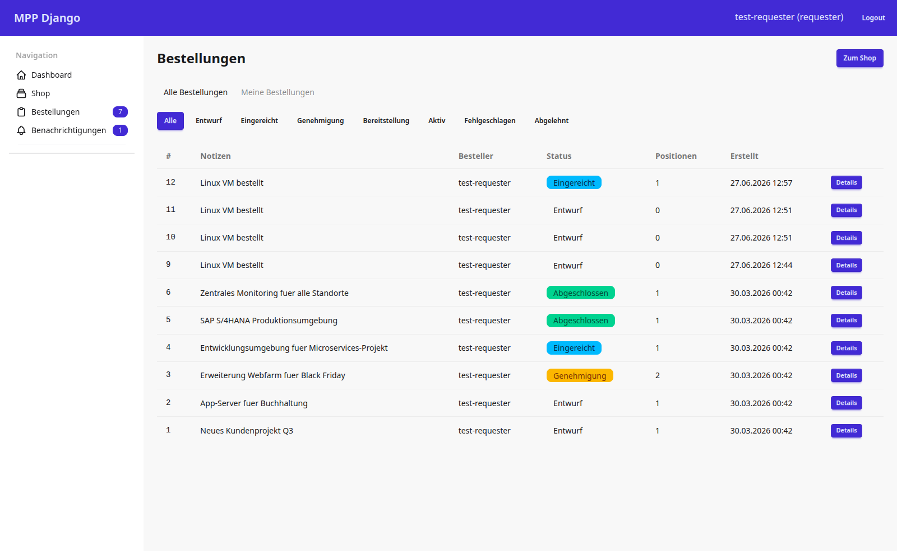
Die Bestellliste mit Filter-Tabs und Status-Chips. Jede Zeile zeigt Nummer, Notiz, Besteller, farbcodierten Status (Entwurf, Eingereicht, Genehmigung, Abgeschlossen …), Positionsanzahl und Erstellzeitpunkt. „Details" öffnet die Bestelldetailseite.
Bestelldetail¶
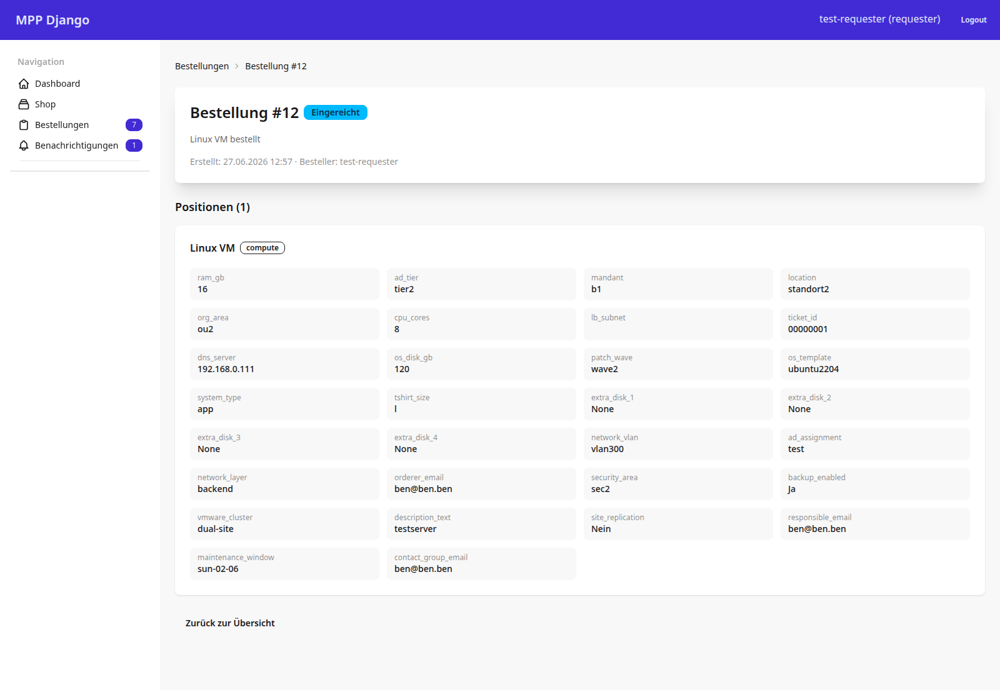
Die Detailseite einer Bestellung zeigt Kopfdaten (Status, Notiz, Besteller) und alle Positionen mit ihren vollständig aufgelösten Parameterwerten im Raster. Der Status-Badge spiegelt die Position im Workflow (Entwurf → Eingereicht → Genehmigung → Bereitstellung → Aktiv).
Benachrichtigungen¶
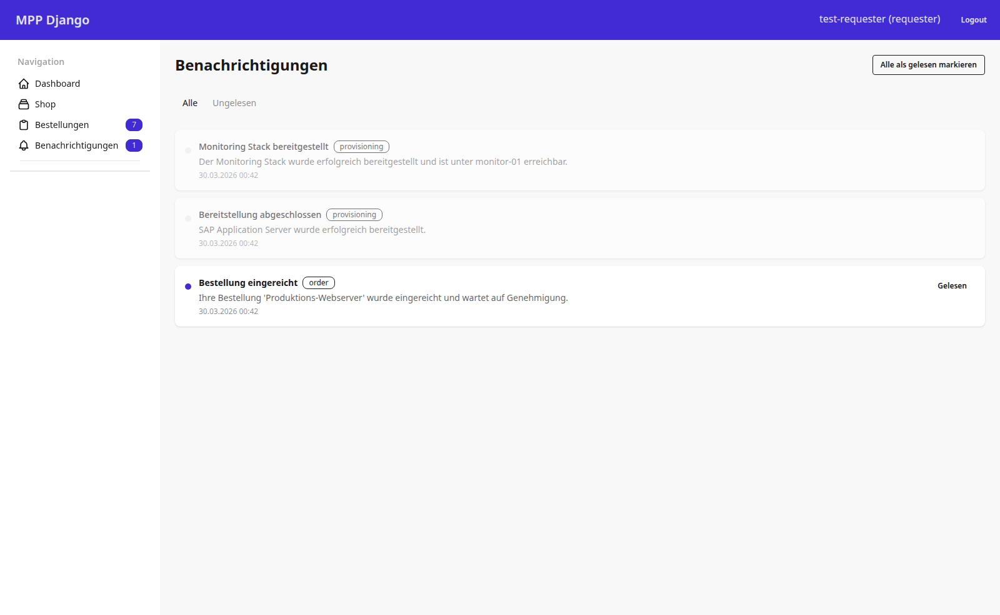
Das Benachrichtigungs-Center bündelt System-Events (Bereitstellung abgeschlossen, Bestellung eingereicht …) mit Typ-Badges und Lesestatus. Einzelne Einträge oder alle auf einmal lassen sich als gelesen markieren. Updates werden über Django Channels (WebSocket) live ausgeliefert.
Abonnements (Subscriptions)¶
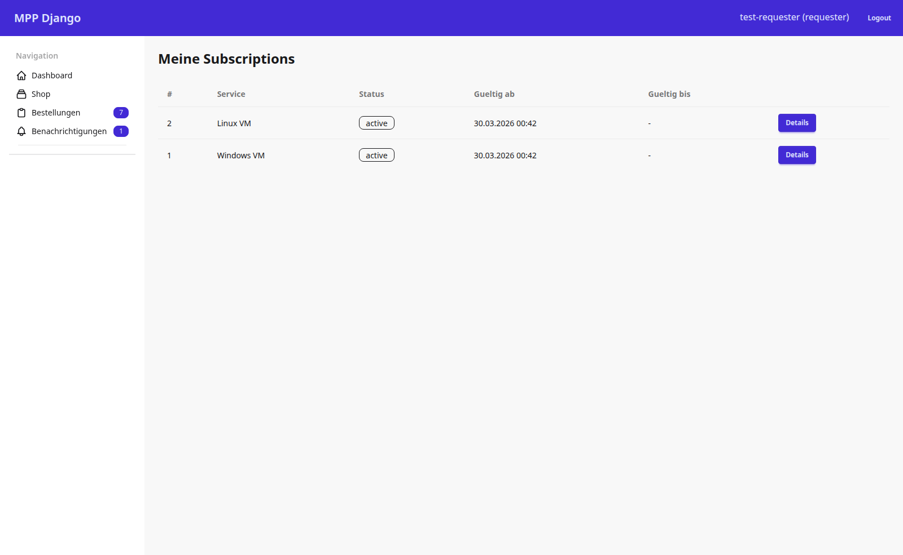
Aktive Service-Abonnements des Benutzers — pro Eintrag Service, Status, Gültigkeitszeitraum und ein Detail-Link. Ein Abonnement entsteht aus einer erfolgreich bereitgestellten Bestellung und kann hier eingesehen und gekündigt werden.
Profil¶
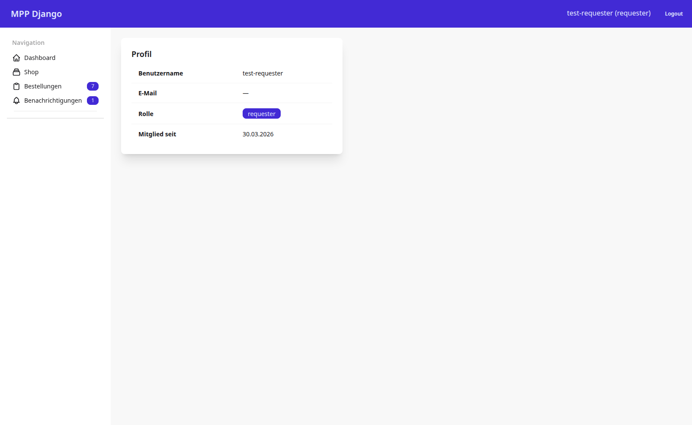
Die Profilseite zeigt Benutzername, E-Mail, Rolle und Beitrittsdatum. Benutzer und Rollen werden ausschließlich über den Admin gepflegt.
Genehmigungen (Approver)¶
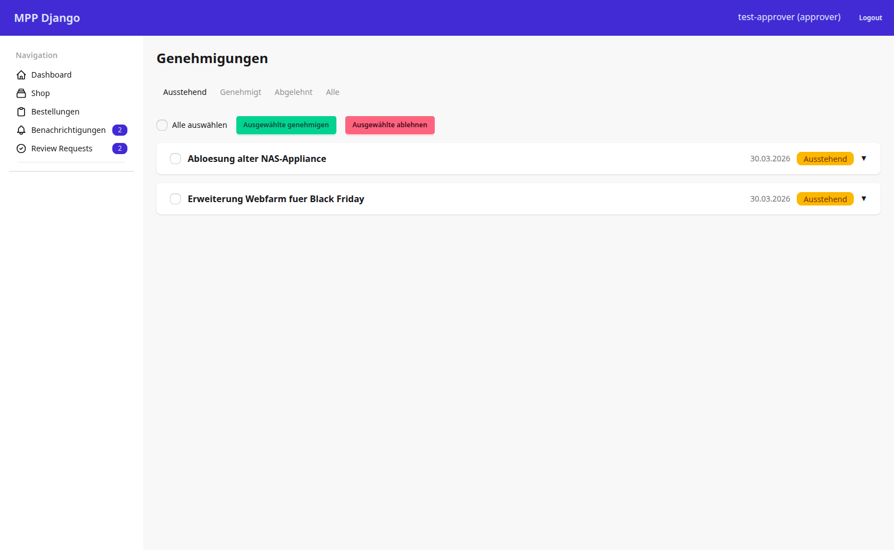
Angemeldet als Approver erscheint die Genehmigungs-Queue (Menüpunkt „Review Requests"). Anträge lassen sich einzeln oder per Mehrfachauswahl genehmigen bzw. ablehnen; Filter-Tabs trennen ausstehende, genehmigte und abgelehnte Anträge.
Audit-Log (Admin)¶
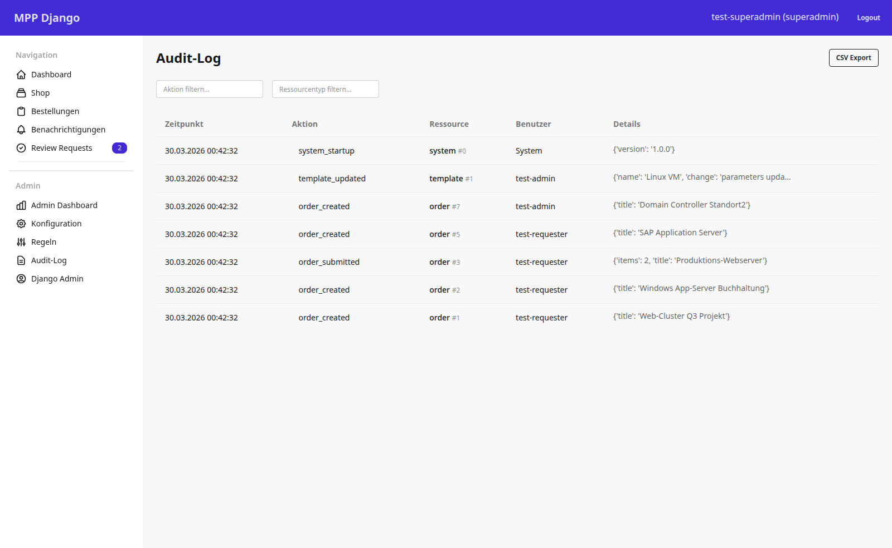
Als Admin/Superadmin wird ein zusätzlicher Admin-Navigationsblock sichtbar (Admin Dashboard, Konfiguration, Regeln, Audit-Log, Django Admin). Das Audit-Log protokolliert revisionssicher alle relevanten Aktionen mit Zeitpunkt, Akteur, Ressource und Detail-Payload und lässt sich nach CSV exportieren.
Django-Admin¶
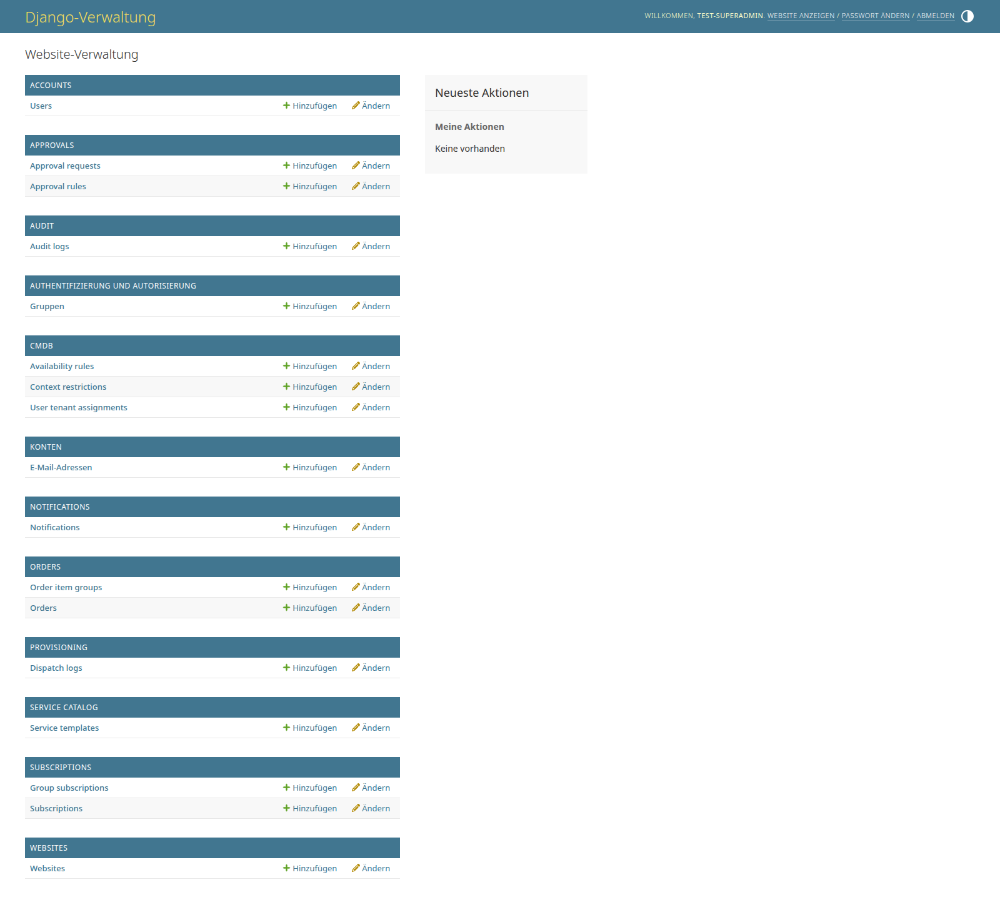
Der Django-Admin ist das primäre Administrationswerkzeug: Benutzerverwaltung, Genehmigungsregeln, CMDB-Kontextregeln, Service-Templates, Bestellungen, Abonnements und Audit-Logs werden hier gepflegt. Der Admin legt insbesondere alle Benutzerkonten an.